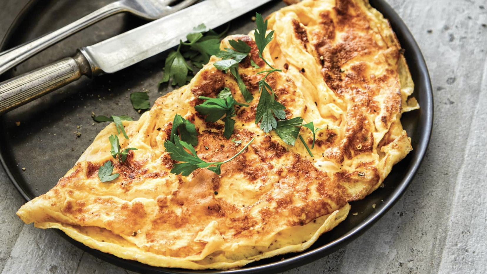
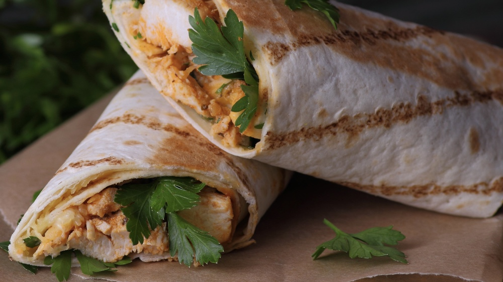

Omelette
Very Easy Cook 6 mins 1 £2.15

- 3 Eggs beaten
- 1 tablespoon of butter
- 2 Mushrooms (optional)
- 2 Ham slices chopped (optional)
- Chopped corriander (optional)
- Put three eggs in a bowl and beat with a fork.
- Turn on grill to full heat.
- Melt a tablespoon of butter in a frying pan. Once it begins to 'bubble' pour the beaten eggs into the pan.
- As the eggs begin to set on the bottom of the pan, gently move the set egg and allow the runny egg to take
its place. Do not stir or you will get scrambled egg.
- While the egg is still a little runny on top add the optional ingredients if you want. Then place the frying
pan under the grill until its browned on the top.
- Take it out the pan and serve on a plate.
Spaghetti Bolognese
Easy Prep 20 mins 2 £4.08

- 1 tablespoons of oil
- 1 onion chopped
- 2 cloves of garlic chopped
- 250g of mice beef or lamb
- 400g tin chopped tomatoes
- 1 tablespoon of tomato purée
- 4-5 mushrooms sliced
- 1 teaspoon of sugar
- 1 beef stock cube
- 56g of spaghetti
- Heat a little oil in a saucepan and fry the onions and garlic for 1 minute.
- Add the mince and cook until the meat is no longer pink.
- Add the tin tomatoes, tomato purée, mushrooms and sugar. Crumble the stock cube into the pan, stir well.
Bring to boil, then simmer gently for 10 minutes. Add the herbs and season well with salt and pepper.
- Fill half a saucepan with water and wait for it to boil. Once the water is 'bubbling' lower the spaghetti
into the water. Once the half that is in the water has softened push the other half in and simmer for 6-8
minutes.
- Drain the pasta and add a little olive oil to stop it sticking together. Serve on the plate with the
Bolognese sauce on top. You can grate Parmesan or Cheddar cheese over the top if you like.
Tortilla Wrap
Easy 15 mins 2-3 £5.20

- 1 chicken breast cut into strips
- 1 tablespoon of oil
- 1 onion sliced thinly
- 1 clove of garlic
- 1 red or green pepper sliced thinly
- 4 mushrooms sliced thinly
- 1 tablespoon tomato purée
- 4 tablespoon water
- Half a teaspoon of chilli flakes or chilli powder
- 4 tortilla wraps
- Heat the oil in a frying pan and add the onions and garlic. Fry for 3-4 minutes. Add the chicken pieces and
fry until no longer pink. Then add the peppers and the mushrooms.
- Add the tomato purée, water and the chilli flakes/powder and stir well for a further 2 minutes.
- Divide the chicken and sauce between 4 tortilla wraps.